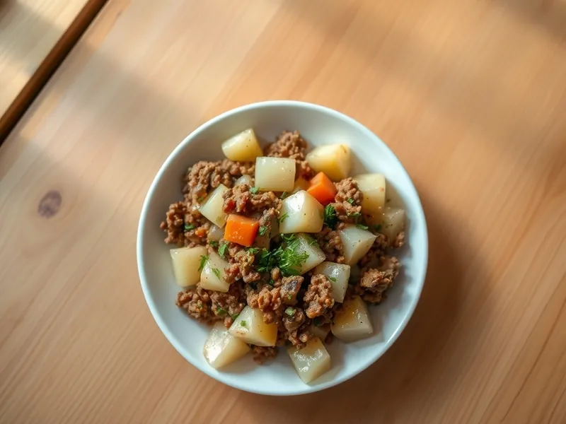

Фото: Иллюстрация ИИ, Cloudflare Workers AI
Картошка с фаршем на сковороде
Мелкие кубики картофеля, потушенные с фаршем, луком и морковью
30 мин4 порц.487 ккал на порциюБ 21 · Ж 30 · У 33Русская кухня
Открыть в приложении: порции, таймеры, список покупок
Продукты на 4 порц.
- Картофель6 шт
- Фарш свино-говяжий400 г
- Лук репчатый1 шт
- Морковь1 шт
- Чеснок2 зуб.
- Растительное масло2 ст. л.
- Вода0,5 стак.
- Соль2 ч. л.
- Перец чёрный молотый2 щеп.
- Укроп по желаниюпо вкусу
Как готовить
- Нарежьте картофель кубиками 1 см, лук мелко, морковь натрите на крупной тёрке.
- Разогрейте масло на сильном огне, выложите фарш и жарьте 5 минут, разбивая комочки лопаткой, пока он не станет серым и рассыпчатым.
- Добавьте лук и морковь и жарьте на среднем огне 4 минуты до мягкости.
- Выложите картофель, посолите, поперчите, перемешайте и жарьте 5 минут без крышки.
- Влейте воду, накройте крышкой и тушите на слабом огне 12 минут, пока картофель не станет мягким.
- Добавьте рубленый чеснок, снимите крышку и прогрейте 2 минуты, чтобы ушла лишняя влага. Посыпьте укропом.
Совет. Кубики делайте не больше 1 см: тогда картошка дойдёт под крышкой за 12 минут и не развалится в пюре.